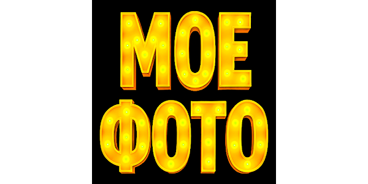

майбутній QA інженер та тестувальник
🏠 Головна | 📞 Контакти | 🖼️ Галерея

Мене звати Дмитро Колесник. Я студент курсу «QA Manual with AI».
Моя мета — стати висококваліфікованим QA-інженером та забезпечувати якість програмних продуктів.
| Тема | Рівень | Досвід (місяців) |
|---|---|---|
| Тестування ПЗ | Середній | 6 |
| HTML/CSS | Початковий | 3 |
| Git/GitHub | Середній | 4 |
Manual QA
Automation QA
Performance QA
Security QA
Jira
Selenium
Postman
Git
TestRail
Немає досвіду
Менше 1 року
1-3 роки
Більше 3 років
HTML
CSS
JavaScript
Python
SQL
© 2026 Дмитро Колесник. Всі права захищено.